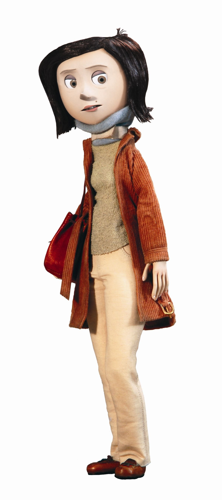
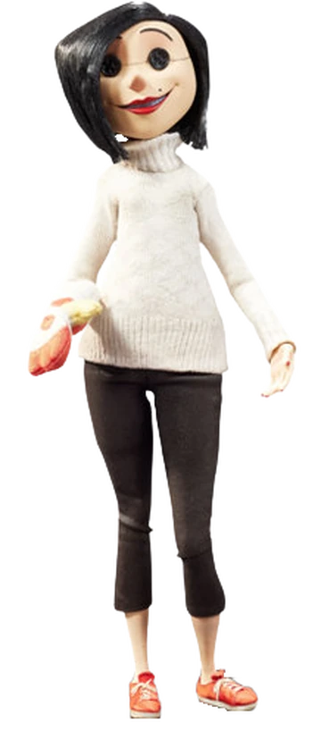

Coraline is a Family/Horror claymation film released in 2009 by Laika Studios. The film is inspired by the Neil Gaiman book of the same title. Coraline is directed by Tom Selick, who also famously directed The Nightmare Before Christmas.
The story follows Coraline Jones, an adventurous and curious young girl who moves into a gloomy old house with her busy and inattentive parents. Feeling lonely and neglected, Coraline discovers a secret door in the house that leads to a parallel world. This alternate reality mirrors her own life but seems more colorful, fun, and catered to her desires. There, she meets her “Other Mother” and “Other Father,” who dote on her and make her feel special—unlike her real parents.
However, Coraline soon realizes that the Other World hides a sinister secret. The Other Mother, with button eyes and a chilling smile, wants Coraline to stay forever… but at a terrible cost. As the dream turns into a nightmare, Coraline must summon all her courage to save herself, her real parents, and the souls of other children trapped in the Other Mother’s web.
With stunning stop-motion animation and a haunting atmosphere, Coraline is a gripping tale about bravery, self-discovery, and the importance of appreciating what you have—even when it's imperfect.
Characters
Coraline Jones
Wybie Lovat
The Cat
Coraline's Mother

The Other Mother/Beldam

Coraline's Father
The Other Father
Fun Facts
The character "Wybie" is not in the original novel, but was added as a companion for Coraline.
Originally, the band They Might Be Giants was supposed to compose the soundtrack for the film. Director Henry Selick decided they didn't fit within his vision for the film. However, he still included one of their songs in the soundtrack. "The Other Father's Song" is written and sung by They Might Be Giants.
The other mother doesn't eat throughout the duration of the film. Until the scene near the end when she takes one bite of a cocoa beetle. This is due to the fact that the other mother doesn't get her nourishment from food, but rather from the souls of the childen she's stolen.
In contrast, the other father always seems famished during every meal. Many theorize this is because the other mother doesn't feed him unless Coraline is there, so he is starved most of the time.
In the film, the Other Wybie and Other Father are seen helping Coraline. This proves they have true sentience and free will. This makes it even more tragic when they eventually die.
When Coraline runs through the tunnel to escape from the other world, it is no longer colorful and whimsical. It is dirty, full of cobwebs and trash. If you look closely, you can see clothing items scattered throughout the tunnel. These items belonged to the ghost childen, and mark how far they ran before the Beldam caught them.
In the opening scene, when the Beldam is making Coraline's doll, a drawer full of buttons is opened. In this drawer we can see a set of pink, chartruse, and vermillion buttons. These are the colors referenced when the Other Mother offers button eyes to Coraline later in the film.
Spink and Forcible, Coraline's neighbors, are 2 old ladies who live together. While not explicitely stated in the film, they are canonically lesbians who live together after retiring from their acting career as costars.
There are several bug motifs throughout the film, especially in scenes that involve the beldam. This is a referece to her spider-like nature.
When Coraline returns to the other world to retrive her parents, you can see the snow globe is already fogged over. It is shown later that this snow globe is where the Beldam has hidden Coraline's parents.
In the other world, all pictures on the wall are of the pink palace. Save for 3 pictures in the kitchen, which feature the silouettes of 3 children. These are the silouettes of the ghost children.